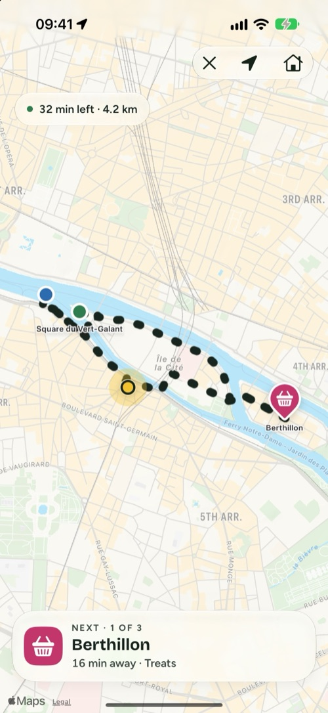
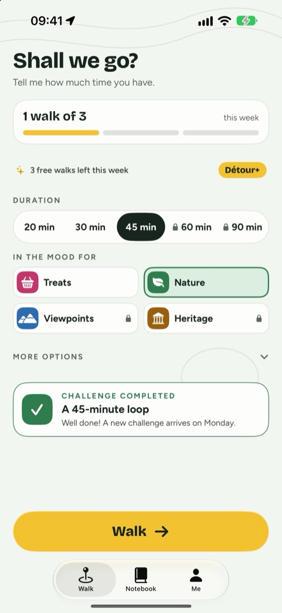
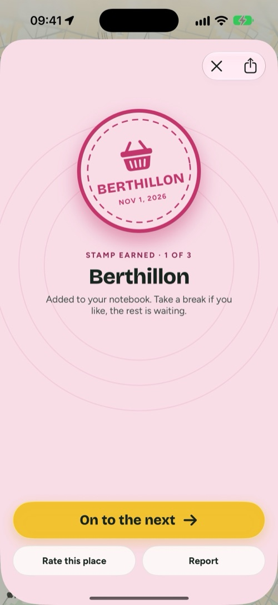
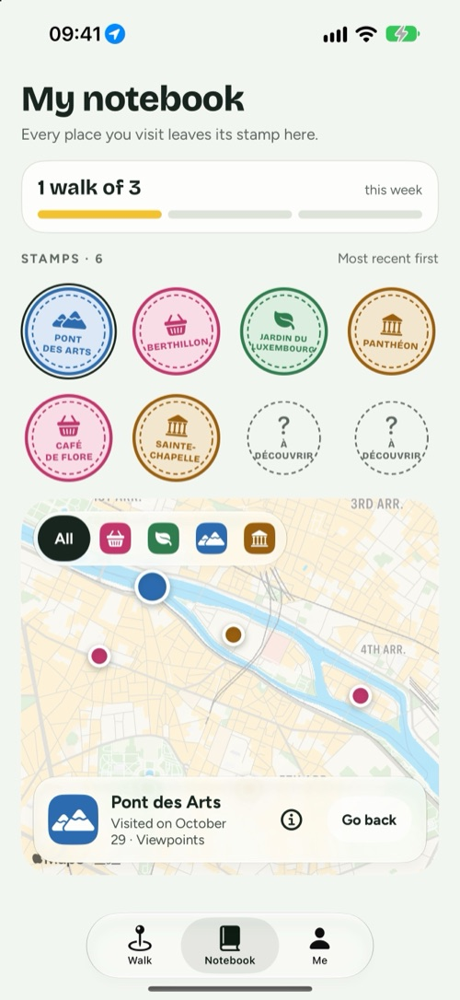

Détour
Tell me how much time you have, I’ll give you a good reason to go for a walk.
For iPhone, iPad and iPhone Duo · Free, with optional Détour+

Three choices, and you’re out the door.
Détour doesn’t tell you how to get from A to B. It gives you a reason to go, and brings you back home.
Your time
20, 30, 45 minutes or more. The loop starts where you are and brings you back.
Your mood
Treats, nature, viewpoints or heritage: 2 to 4 real places to reach along the way.
Go
Follow the route. Every place you reach is validated automatically and leaves a stamp in your notebook.
Reasons to walk, not sightseeing.
A walk in four screens.



Closed in your hand, open on the map.
- Closed, the essentials fit on the outer screen: the time, the mood, and “Go”.
- Open, settings on one side, the loop taking shape on the other.
- Surprise mode: the next places are revealed as you go.
- During a walk, the next place and the distance stay on your Lock Screen and in the Dynamic Island.
- A weekly goal, badges, a new challenge every week, and each walk saved to Apple Health if you like.

Free to build the habit. Détour+ to go further.
Unlimited walks, all four moods, loops up to 90 minutes with your choice of terrain, and surprise mode.
Yearly
Per yearstarts with a 7-day free trial
Monthly
Per monthcancel anytime
Lifetime
Onceone purchase, for good
Free: 3 walks a week, the Nature and Treats moods, up to 45 minutes, the notebook and badges. Prices vary by country. Subscriptions are managed and cancelled in your Apple Account settings.
Your walk is your business.
Nothing to create, nothing to remember. Your notebook stays on your iPhone.
It’s used to draw the loop and validate places, during the walk only.
No advertising trackers. The details are in the privacy policy.